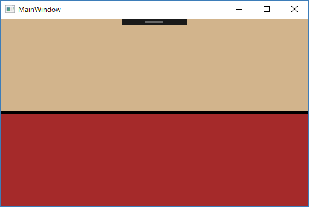

WPF のコントロールの一つである "GridSplitter" について記載します。
1. GridSplitter を使用して行のサイズを変更する
この例では、水平 GridSplitter を使用して、Grid の寸法を変更せずに Grid 内の行間の領域を再配分する方法を示します。

["MainWindow.xaml"]
<Window x:Class="SimpleGridSplitter.MainWindow"
xmlns="http://schemas.microsoft.com/winfx/2006/xaml/presentation"
xmlns:x="http://schemas.microsoft.com/winfx/2006/xaml"
xmlns:d="http://schemas.microsoft.com/expression/blend/2008"
xmlns:mc="http://schemas.openxmlformats.org/markup-compatibility/2006"
xmlns:local="clr-namespace:SimpleGridSplitter"
mc:Ignorable="d"
Title="MainWindow" Height="350" Width="525">
<Grid>
<Grid.RowDefinitions>
<RowDefinition Height="50*"/>
<RowDefinition Height="Auto"/>
<RowDefinition Height="50*"/>
</Grid.RowDefinitions>
<StackPanel Grid.Row="0" Background="Tan"/>
<GridSplitter Grid.Row="1" Background="Black" HorizontalAlignment="Stretch" Height="5" VerticalAlignment="Center"/>
<StackPanel Grid.Row="2" Background="Brown"/>
</Grid>
</Window>
サンプルプログラム ダウンロード
記載： 2017年08月15日 木下英俊